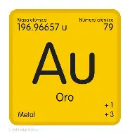

Oro ;3
El oro es un elemento químico metálico, perteneciente al grupo 11 de la tabla periódica.
Su símbolo Au proviene del latín aurum, que significa "brillante amanecer" o "dorado". Es un metal de transición,
de color amarillo brillante, sólido a temperatura ambiente, y posee un punto de fusión elevado (1064 °C)
y un punto de ebullición de 2856 °C

Regresar
Volver a inicio